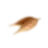
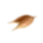

CRAFTED FROM NATURE
Welcome to the world of Signature Setting out a bold vision to be India’s Green Whisky, the all-new Signature is as authentic & natural as it gets. Our whisky is an exquisite blend of nature’s finest ingredients - two row & six row strains of barley, fresh water and fine grain spirits imported from Scottish highlands and spey-side. Crafted with perfection by our Master Blender Louise Martin, it is truly unique, full of character & bound to leave a lasting signature. Taste of Nature in a Glass!


the signature of our master blender
In the skilled hands of Louise Martin, our Master Blender, the new Signature attains a level of perfection that is truly remarkable. Her meticulous craftsmanship infuses every sip of these exquisite blends with a sense of revelation, offering a remarkably smooth and delightfully rich experience.

 

Born of craft
Signature is a creation of natural ingredients- Nature's finest, barley, fresh water and 10 imported scotches harmonize to become one. They are blended with aged Indian malts and fine grain spirits. Even the bottle is made from recycled glass.
 scan the qr code for more
scan the qr code for more
signature premier whisky
Smooth & CreamySignature Premier Whisky Gives a perfect smooth and creamy taste that's elevated sensorially with silky honey, a dash of fruitiness & tinge of Maltiness. An exquisite Scotch selection, Signature Premier is a blend of Natural Ingredients 10 Imported Scotches, Aged Indian Malts & Fine Grain Spirits.The fine ingredients are purposefully selected to bring out a remarkably creamy character
signature rare aged whisky
deep & richSignature Rare Whisky gives a perfect Taste that’s DEEP & RICH An authentically rich taste, with Notes of Dried Fruits & a nutty Aroma. A 3 Grain Whisky with Imported Scotch, Aged Indian Malts and Grain Spirits.The fine ingredients are purposefully sourced to bring out a remarkably rich character

grain to glass
From the careful sourcing of organic, locally grown grains to the use of energy-efficient distillation methods, sustainability is always at the forefront. The result? A sustainably produced whiskey, from grain to glass. So, sip and savour this sublime concoction, knowing that it was crafted with a commitment to both taste and the planet.
nature in a glass
Experience the beauty of nature in every sip with these special curations crafted by the world’s top mixologists. Made with only the finest-locally sourced ingredients that celebrate natural flavors and aromas of the earth.
signature
premier
Crafted from earth-friendly methods, this whiskey unveils a harmonious blend of nature's abundance and silky elegance.
signature
rare
Signature Rare reveals an unmistakable depth, weaving a tale of opulence that lingers on the palate, to savor all its layers.
Filter
Coconut
Kappi (south)
Signature paired with the two most iconic flavours of coffee & coconut along with just the right amount of soda!
The
Signature
Cutting (west)
Taste of Maharashtra with the famous masala tea flavour, a lip smacking mix of pineapple and a touch of Jaggery.
Salty
bay
Complementing the fine aromas is the salty sweet syrup made with Himalayan Pink salt and Palm Candy Sugar making this a whole some cocktail that has a depth of flavors and long-lasting finish.

East India
Julep
The flavours of east in west. Kaffir lime & mint cordial taking you back to a more nostalgic time, topped off with a perfect amount of lime juice.
OUR MIXOLOGISTS
Our mixologists elevate libations to liquid art, crafting unforgettable cocktails and drinks that galvanize the senses.

Think green drink green
We take pride in using thoughtfully sourced, sustainable materials to serve our drinks. From paper straws to recycled drinkware, we minimize waste without compromising on pizzazz. Our commitment to conservation extends to our innovative recycling and composting systems, ensuring that nothing goes to waste. Join us for a guilt-free drinking experience that's kind to both the planet and your taste buds. Cheers to a greener future, one drink at a time!